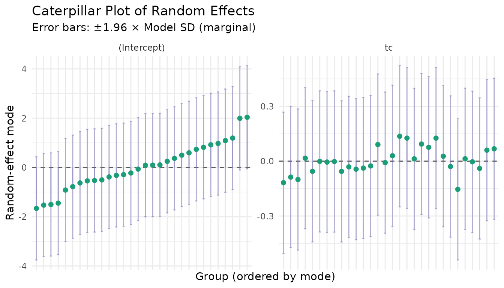

brsmm() adds Gaussian random effects to the mean
submodel of brs() for clustered or longitudinal scores
(patients with repeated visits, raters, centers). This vignette covers
the model, the integration methods, random-effect summaries and tests,
marginal and conditional predictions, residuals, group-level
cross-validation and simulation. The interval-censored likelihood and
the interval maps are those of vignette("brs-intro"). The
data sets are small so that the vignette builds quickly; the results are
illustrative.
The model
For observation
of group
,
where
is the row of the random-effects design given by
random = ~ terms | group (~ 1 | id for a
random intercept, ~ 1 + x | id for an intercept and a slope
with a free correlation). The dispersion submodel has no random effects.
Given
,
each score contributes the cell probability of brs(), and
the marginal log-likelihood is
is parameterized by its lower Cholesky factor: the log of each diagonal
entry and the off-diagonal entries. These are the
(re_chol_logsd)_ and (re_chol)_ entries of
coef(); for a random intercept the single entry is
.
Integration methods
The integral is computed around the mode of the log integrand, with curvature there:
-
int_method = "laplace"(default): the Laplace approximation, fast and accurate when groups are not tiny. -
int_method = "aghq": adaptive Gauss–Hermite quadrature withn_pointsnodes per dimension (default 11) on a product grid centered at and scaled by (at most 500000 nodes). -
int_method = "qmc": importance sampling from onqmc_pointsHalton points (default 1024). It is deterministic and, with two or more random effects, slightly underestimates the log-likelihood; prefer"aghq"for up to three random effects.
optim() uses the compiled gradient of the chosen
approximation; the Hessian for vcov() is a central
difference of that gradient.
Simulated data
brsmm_sim() simulates scores from this model, given the
random-effect standard deviations and correlation. Here: 30 patients
with four visits on an NRS-11 scale, a centered time tc, a
treatment arm trt, and a random intercept and time
slope:
d <- expand.grid(visit = 1:4, id = 1:30)
d$tc <- (d$visit - 2.5) / 1.5
d$trt <- as.integer(d$id %% 2 == 0)
set.seed(7)
s <- brsmm_sim(~ tc + trt, random = ~ 1 + tc | id, data = d,
beta = c(-0.3, -0.4, -0.5), phi = qlogis(0.15),
re_sd = c(0.8, 0.3), re_cor = 0.3, ncuts = 10)
head(s)
#> left right yt y delta visit id tc trt
#> 1 0.85000 0.95 9e-01 9 3 1 1 -1.0000000 0
#> 2 0.85000 0.95 9e-01 9 3 2 1 -0.3333333 0
#> 3 0.55000 0.65 6e-01 6 3 3 1 0.3333333 0
#> 4 0.55000 0.65 6e-01 6 3 4 1 1.0000000 0
#> 5 0.25000 0.35 3e-01 3 3 1 2 -1.0000000 1
#> 6 0.00001 0.05 1e-05 0 1 2 2 -0.3333333 1
attr(s, "truth")$par
#> (Intercept) tc
#> -0.3000000 -0.4000000
#> trt (phi)_(Intercept)
#> -0.5000000 -1.7346011
#> (re_chol_logsd)_(Intercept)|id (re_chol)_tc:(Intercept)|id
#> -0.2231436 0.0900000
#> (re_chol_logsd)_tc|id
#> -1.2511281The attribute "truth" holds the true parameters in the
order and on the scale of coef(), and "ranef"
the simulated random effects.
Fitting
fit_ri <- brsmm(y ~ tc + trt, random = ~ 1 | id, data = s)
fit_rs <- brsmm(y ~ tc + trt, random = ~ 1 + tc | id, data = s)
summary(fit_rs)
#>
#> Call:
#> brsmm(formula = y ~ tc + trt, random = ~1 + tc | id, data = s)
#>
#> Randomized Quantile Residuals:
#> Min 1Q Median 3Q Max
#> -2.5557 -0.6204 0.0051 0.4749 2.9221
#>
#> Coefficients (mean model with logit link):
#> Estimate Std. Error z value Pr(>|z|)
#> (Intercept) 0.08037 0.29963 0.268 0.7885
#> tc -0.36923 0.11697 -3.157 0.0016 **
#> trt -0.73612 0.42983 -1.713 0.0868 .
#> ---
#> Signif. codes: 0 '***' 0.001 '**' 0.01 '*' 0.05 '.' 0.1 ' ' 1
#>
#> Coefficients (dispersion model for sigma with logit link):
#> Estimate Std. Error z value Pr(>|z|)
#> (Intercept) -1.7568 0.2094 -8.391 <2e-16 ***
#> ---
#> Signif. codes: 0 '***' 0.001 '**' 0.01 '*' 0.05 '.' 0.1 ' ' 1
#>
#> Random effects (SD and Corr; 95% Wald CI on the log / atanh scale; no tests, see anova()):
#> Estimate Lower Upper
#> SD (Intercept) 1.0686 0.7727 1.4779
#> SD tc 0.1970 0.0095 4.0923
#> Corr tc,(Intercept) 0.1645 -0.8639 0.9276
#> ---
#> Mixed beta interval model (Laplace)
#> Observations: 120 | Groups: 30
#> Log-likelihood: -253.8471 on 7 Df | AIC: 521.6942 | BIC: 541.2066
#> Pseudo R-squared: 0.0788
#> Number of iterations: 64 (BFGS)
#> Censoring: 102 interval | 10 left | 8 rightThe random-effects block reports the standard deviations and the
correlation with intervals built on the log scale (SD) and the
scale (correlation) and mapped back. It gives no
-test:
a variance of zero lies on the boundary of the parameter space, so test
it with anova() (below). The same numbers are in
summary(fit)$varcorr.
The three integration methods give nearly the same estimates on this data:
fit_aghq <- brsmm(y ~ tc + trt, random = ~ 1 | id, data = s,
int_method = "aghq", n_points = 7)
fit_qmc <- brsmm(y ~ tc + trt, random = ~ 1 | id, data = s,
int_method = "qmc", qmc_points = 256)
round(cbind(laplace = c(coef(fit_ri), logLik = logLik(fit_ri)),
aghq = c(coef(fit_aghq), logLik = logLik(fit_aghq)),
qmc = c(coef(fit_qmc), logLik = logLik(fit_qmc))), 4)
#> laplace aghq qmc
#> (Intercept) 0.0744 0.0751 0.0741
#> tc -0.3611 -0.3599 -0.3602
#> trt -0.7140 -0.7163 -0.7160
#> (phi)_(Intercept) -1.7110 -1.7104 -1.7100
#> (re_chol_logsd)_(Intercept)|id 0.0545 0.0665 0.0641
#> logLik -253.9230 -253.3591 -253.4076Random effects
ranef() returns the conditional modes
,
one row per group; fit$random$D and
fit$random$sd_b hold the estimated covariance matrix and
standard deviations:
head(ranef(fit_rs))
#> (Intercept) tc
#> 1 0.8194782 -0.029209222
#> 2 -1.5034029 -0.100498130
#> 3 -1.5294370 -0.087103237
#> 4 -0.5462813 -0.002064520
#> 5 -0.7803565 -0.001166132
#> 6 -0.9184533 -0.055430537
fit_rs$random$D
#> [,1] [,2]
#> [1,] 1.14198316 0.03463383
#> [2,] 0.03463383 0.03881125brsmm_re_study() summarizes the random effects: the
covariance, the shrinkage of the modes and the intraclass correlation of
,
computed with the beta level-1 variance:
brsmm_re_study(fit_rs)
#>
#> Random-effects study
#> Groups: 30
#>
#> Random-effects (VarCorr):
#> Name Std.Dev. Corr
#> (Intercept) 1.0686
#> tc 0.1970 0.1645
#>
#> ICC (logit(Y) scale, beta level-1 variance): 0.5704
#>
#> Summary by term (SD_model = model SD; shrinkage = Var(modes)/Var(model)):
#> term sd_model mean_mode sd_mode shrinkage_ratio shapiro_p
#> (Intercept) 1.0686 0.0138 0.9665 0.8179 0.6541
#> tc 0.1970 0.0026 0.0725 0.1354 0.7503
autoplot.brsmm(fit_rs, type = "ranef_caterpillar")
autoplot.brsmm() also draws
"ranef_density", "ranef_pairs",
"ranef_qq", "shrinkage",
"calibration", "score_dist" and
"residuals_by_group"; plot.brsmm() gives the
panels of plot.brs() with response or Pearson residuals,
plus random-effect panels.
Testing variance components
Adding a random-effect term puts its variance on the boundary of the
parameter space under the null hypothesis, so the likelihood ratio does
not follow
.
When a model adds one random-effect term, anova() uses the
mixture
(Self and Liang, 1987; Stram and Lee, 1994):
from brs()
to a random intercept, and
from a random intercept to an intercept and slope. The heading of the
table says which rows use it.
fit_0 <- brs(y ~ tc + trt, data = s)
anova(fit_0, fit_ri, fit_rs)
#> Likelihood-ratio comparison of brs/brsmm models
#> Rows M2, M3: one added random effect (variance on the boundary); Pr(>Chisq) from the chi-bar-square mixture 1/2 chi2(Df - 1) + 1/2 chi2(Df).
#>
#> Df logLik AIC BIC Chisq Chi Df Pr(>Chisq)
#> M1 (brs) 4 -279.98 567.97 579.12
#> M2 (brsmm) 5 -253.92 517.85 531.78 52.1196 1 2.611e-13 ***
#> M3 (brsmm) 7 -253.85 521.69 541.21 0.1517 2 0.8119
#> ---
#> Signif. codes: 0 '***' 0.001 '**' 0.01 '*' 0.05 '.' 0.1 ' ' 1When a variance is essentially zero, brsmm() warns
“Variance component at the boundary”; rely on the likelihood-ratio test
for that term.
AIC() and BIC() accept several fits,
brs and brsmm alike, and return a
df/criterion table as stats::AIC() and
stats::BIC() do. There is no single sample size for a mixed
model: BIC() counts observations by default and groups with
n = "groups". Compare BIC values only under the same
convention.
Conditional and marginal predictions
predict() gives conditional quantities: a group of the
fit uses its mode
,
a new group gets
:
nd <- data.frame(tc = 0, trt = 1, id = c(1, 999))
predict(fit_ri, newdata = nd, type = "expected_score")
#> [1] 5.448165 3.453218Under a nonlinear link, the prediction at
describes a subject whose random effects are zero, which is not the
population average. brs_marginal() integrates the random
effects out to give population-averaged score probabilities, expected
scores and exceedance probabilities
,
with delta-method standard errors over all parameters;
conditional = TRUE sets
instead. The grouping variable is not needed in
newdata:
nd <- data.frame(tc = c(-1, 1), trt = 1)
brs_marginal(fit_ri, nd, type = "expected_score")
#> tc trt row estimate std.error lower upper
#> 1 -1 1 1 4.433166 0.6380772 3.242149 5.693117
#> 2 1 1 2 3.048002 0.5686567 2.057841 4.259101
brs_marginal(fit_ri, nd, type = "expected_score", conditional = TRUE)
#> tc trt row estimate std.error lower upper
#> 1 -1 1 1 4.308536 0.7745230 2.895803 5.843569
#> 2 1 1 2 2.684320 0.6323208 1.633255 4.081798Differences between rows, such as the change from the first to the
last visit in
,
are given by contrast:
brs_marginal(fit_ri, nd, type = "exceed", k = 5, contrast = c(2, 1))
#> contrast row1 row2 k estimate std.error lower upper
#> 1 2 - 1 2 1 5 -0.1981716 0.06312098 -0.3218864 -0.07445672Residuals
For type = "rqr" (randomized quantile residuals) and
"cell_deviance", re selects how the random
effects enter:
-
"conditional"(default): at the modes . The modes are shrunk toward zero, so the rqr residuals are not exactly under the model, especially for small groups. -
"marginal": from the marginal distribution of each observation, with the random effects integrated out. The rqr residuals are under the model; residuals of the same group are correlated. -
"posterior": at one draw of each from its posterior (importance resampling withn_drawsproposals per group, default 200). The rqr residuals are close to independent under the model, without the shrinkage of the modes.
set.seed(1)
res <- sapply(c("conditional", "marginal", "posterior"), function(r)
residuals(fit_ri, type = "rqr", re = r))
round(rbind(mean = colMeans(res), sd = apply(res, 2, sd)), 3)
#> conditional marginal posterior
#> mean -0.013 0.007 0.003
#> sd 0.883 1.019 0.999The other types of residuals.brs()
("response", "pearson", …) are evaluated at
the conditional modes.
Group-level cross-validation
brsmm_cv() forms folds by group, so all observations of
a group are held out together. Each held-out group is scored by its
marginal log-likelihood at the training estimates: its random effects
are integrated out, so no estimate of them is needed. seed
makes the folds reproducible, and attr(, "folds") returns
them for reuse with another model:
cv_ri <- brsmm_cv(y ~ tc + trt, random = ~ 1 | id, data = s, k = 3, seed = 1)
cv_ri
#> repeat fold n_groups_train n_groups_test n_train n_test log_score converged
#> 1 1 1 20 10 80 40 -84.01975 TRUE
#> 2 1 2 20 10 80 40 -85.92605 TRUE
#> 3 1 3 20 10 80 40 -87.83580 TRUE
#> error warning
#> 1 <NA> <NA>
#> 2 <NA> <NA>
#> 3 <NA> <NA>
folds <- attr(cv_ri, "folds")[[1]]
cv_rs <- brsmm_cv(y ~ tc + trt, random = ~ 1 + tc | id, data = s,
folds = folds)
c(ri = attr(cv_ri, "log_score"), rs = attr(cv_rs, "log_score"))
#> ri rs
#> -257.7816 -259.1025The total held-out log score is the log probability of the held-out
scores (higher is better). For score data it is on the same scale as the
held-out log-likelihood of any other model that gives a pmf on
,
evaluated on the same folds. brs_loglik_contrib() returns
the per-group contributions of a fit, also for new data.
Simulation from a fit
simulate() draws new scores from a fitted model. For
brsmm fits, re = "marginal" (default) draws
new random effects and re = "conditional" keeps the
conditional modes. A quick check compares the observed share of each
border score with its simulated distribution:
sims <- simulate(fit_ri, nsim = 50, seed = 1)
obs <- c(p0 = mean(s$y == 0), p10 = mean(s$y == 10))
sim_p <- rbind(p0 = colMeans(sims == 0), p10 = colMeans(sims == 10))
cbind(observed = obs, t(apply(sim_p, 1, quantile, c(0.05, 0.95))))
#> observed 5% 95%
#> p0 0.08333333 0.041666667 0.1333333
#> p10 0.06666667 0.008333333 0.0675000Boundary cutpoints
cutpoints = "boundary" works in brsmm() as
in brs() (see vignette("brs-intro")), with the
same requirements and the same 2-df likelihood-ratio test against the
fixed map; brsmm_sim() simulates from given boundary
cutpoints.
References
- Lopes, J. E. (2023). Modelos de regressão beta para dados de escala. Master’s dissertation, Universidade Federal do Paraná, Curitiba. https://acervodigital.ufpr.br/xmlui/handle/1884/86624
- Pinheiro, J. C., and Bates, D. M. (1995). Approximations to the log-likelihood function in the nonlinear mixed-effects model. Journal of Computational and Graphical Statistics, 4(1), 12–35. https://doi.org/10.1080/10618600.1995.10474663
- Self, S. G., and Liang, K.-Y. (1987). Asymptotic properties of maximum likelihood estimators and likelihood ratio tests under nonstandard conditions. Journal of the American Statistical Association, 82(398), 605–610.
- Stram, D. O., and Lee, J. W. (1994). Variance components testing in the longitudinal mixed effects model. Biometrics, 50(4), 1171–1177.